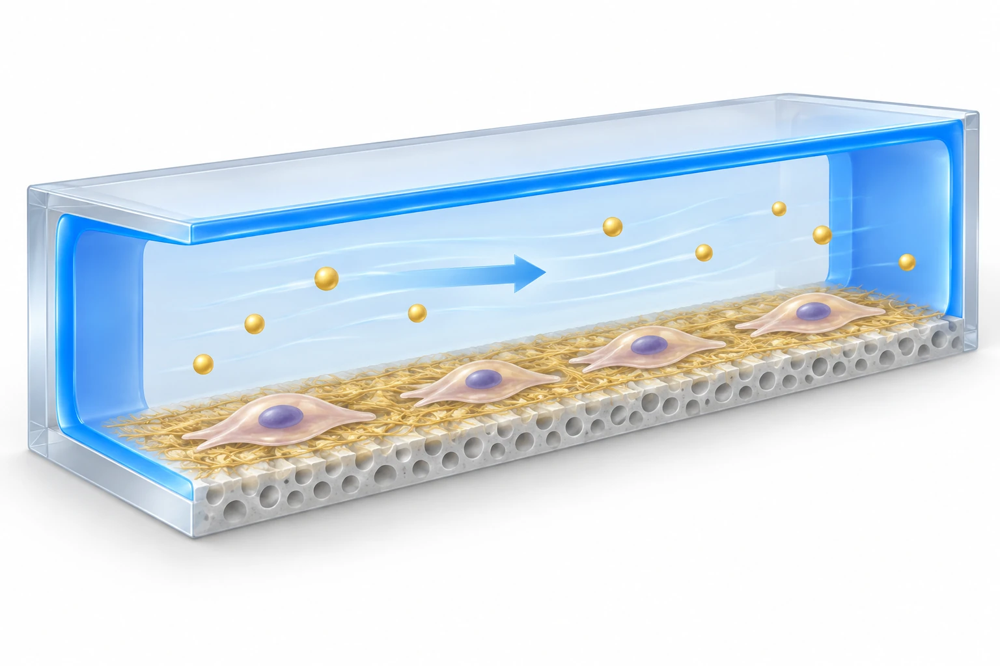

연구 배경과 분류
윤활 채널의 비특이적 약물 손실 억제와 배양막의 필요한 세포 부착을 분리 설계한다. 체외 장기 모델이므로 직접 장치–숙주 반응과는 거리가 있어 확장 분류로 표시한다.
경계 분류: 탐색을 위해 가장 가까운 주제를 배정했습니다. 분류 근거와 교차 연관을 함께 읽어야 하며, 주 테마만으로 연구 범위를 한정할 수 없습니다. 기초 연구의 분류는 직접적인 바이오전자 응용을 입증하지 않습니다.
체외 장기칩의 약물 손실과 세포 배양면
PDMS 장기칩에서는 투입한 저분자 물질이 채널 재료에 흡수되어 세포가 실제로 받는 농도와 달라질 수 있습니다. 채널 전체를 비부착성으로 만들면 세포 배양도 어려워질 수 있습니다. 이 연구는 약물이 지나가는 벽과 세포가 자라는 바닥에 서로 다른 표면 역할을 주어 두 문제를 분리합니다.
핵심 접근과 발전
윤활 계면으로 처리한 채널 벽은 비특이적 손실을 줄이고, ECM으로 코팅한 반다공성 PET 막은 세포가 자랄 자리를 제공합니다. 같은 칩 안에서도 물질 손실을 막아야 하는 영역과 세포 부착이 필요한 영역을 나눈 것입니다. 이는 모든 표면의 부착을 동일하게 억제하는 코팅과 구별되는 설계 이유입니다.

AI 생성 개념도: PreD의 윤활 채널 벽과 ECM 코팅 PET 세포 지지막의 서로 다른 역할을 설명합니다. 한 채널만 단순화한 그림이며 약물 회수율·독성 예측·장기 기능의 실험 결과가 아닙니다.
아래쪽 채널은 생략했습니다. 막의 확대된 구멍과 두께, ECM 섬유·세포·용질의 모양과 개수는 설명용 기호이며 실제 기공 배열·세포 형태·농도·흐름장을 재현하지 않습니다. 금색은 금속을 뜻하지 않습니다.
논문 원그림을 복제한 이미지가 아니며, 원그림 재사용 허가를 의미하지 않습니다.
공개 논문의 개념으로 웹 ChatGPT에서 생성하고, 선택적으로 읽은 본문과 명시된 독립 검토 범위 안에서 개념의 일치 여부를 확인했습니다. 전체 본문·보충자료 검증을 뜻하지 않습니다. 표시용 WebP 인코딩 외에 자르기나 내용 편집을 하지 않았습니다.
평가 방법과 조건
세포가 없는 칩의 형광 물질·약물 회수 시험은 유체 경로에서 얼마나 잃는지를 평가합니다. 장 모델의 독성 반응과 혈액뇌장벽 모델의 물질 이동은 세포가 있을 때의 생물학적 질문입니다. 빈 칩에서 회수율이 높아졌다는 사실만으로 세포 모델의 임상 예측력이 검증되었다고 할 수는 없습니다.
주요 결과
같은 유동·노출 조건에서 DEX 농도를 바꾼 장 모델 시험은 기존 칩보다 PreD 칩에서 낮은 IC50을 보고했습니다. 약물 손실을 줄여 세포에 전달되는 노출을 바꿀 수 있다는 설계 이유가 실제 독성 판독의 차이와 연결된 것입니다. 이는 해당 DEX·Caco-2 조건에서의 결과이며, 모든 약물의 임상 독성을 더 정확히 예측한다는 검증은 아닙니다.
한계와 남은 질문
비교에는 약물의 성질과 농도, 유량, 노출 시간, 배양막과 세포 상태가 함께 필요합니다. 코팅의 장기 유지와 다양한 분자에 대한 회수, 임상 결과 예측은 추가 검증 질문입니다. 저자도 임상 예측력의 후속 검증을 요구하므로 현재 자료를 임상 대체 시험으로 확정하지 않습니다.
관련 외부 연구
PDMS absorption of small molecules and consequences in microfluidic applications
Toepke와 Beebe는 PDMS 분배가 용액 농도와 결과를 바꿀 수 있음을 다룬다. PreD는 이 문제에 코팅과 배양 구획 설계로 대응한다.
외부 초록은 문제의 근거이며 모든 분자에서 동일한 손실이나 코팅 이득을 뜻하지 않는다.
초록 확인교신저자 확인
서정목 교신 확인아래는 서정목의 교신저자 여부에 관한 확인 기록입니다. 저자 순서나 별표만으로 판정하지 않으며, 본문 내용 검증과 별도로 읽어야 합니다.
- 교신 고지 확인 출처 ↗
Corresponding Author — Jungmok Seo
Author information: Tae-Eun Park and Jungmok Seo blocks · public_publisher_author_information_read
- 본문 확인 범위
- Wiley 공개 본문의 약물 회수, 장·혈액뇌장벽 모델 및 결론을 확인했다. 임상 예측력은 저자도 추가 검증이 필요하다고 명시한다.
- 보충자료 확인 범위
- 보충자료를 전수 검토하지 않았습니다. 본문에서 보충자료를 인용한 사실과 해당 보충자료를 직접 확인한 범위를 구분합니다.
- 남은 확인
- 보충 약물 패널·산소 전달 자료와 장기 배양 범위를 학교 Chrome DOI 검증에서 확인할 것.
COVERAGE & OUTREACH
보도와 소개
논문과의 연관성을 확인한 소개 자료입니다. 언론 게재는 독립 취재나 실험 결과의 추가 검증을 뜻하지 않습니다.
Innovative PreD Chip for Drug Testing developed ↗
연구 소개 끝에 정확한 논문 제목과 DOI 10.1002/smll.202402431이 있고, 서정목·박태은 공동연구 및 PreD를 설명한다.
본문 확인 본문과 Find out more 서지 부분을 읽었다. 페이지 게시일은 표시되지 않아 논문 발행일을 대신 쓰지 않았다.
연세대, UNIST와 '약물 테스트 칩, PreD' 개발 ↗
서정목·김태영·박태은·최정원, Small, PFPE로 PDMS 약물 손실을 줄이는 PreD 기술이 #81과 일치한다.
본문 확인 기사 본문·기자·입력일을 읽었다. 연세대가 밝혔다고 명시한 대학 발표 기반 기사로, 독립 후속 실험·외부 전문가 검증은 확인되지 않았다.
근거와 확인 범위
Wiley 공개 본문의 약물 회수, 장·혈액뇌장벽 모델 및 결론을 확인했다. 임상 예측력은 저자도 추가 검증이 필요하다고 명시한다.
추가 해설은 아래에 명시한 근거 범위에서 편집 검토를 승인한 내용입니다. 모든 본문·보충자료의 검증 완료를 뜻하지 않습니다.
- 추가 본문 확인 범위
- Wiley 공개 본문의 약물 회수, 장·혈액뇌장벽 모델 및 결론을 확인했다. 임상 예측력은 저자도 추가 검증이 필요하다고 명시한다.
- 추가 보충자료 확인 범위
- 보충자료를 전수 검토하지 않았습니다. 본문에서 보충자료를 인용한 사실과 해당 보충자료를 직접 확인한 범위를 구분합니다.
- 원본 공개 논문 목록 ↗ · #81 · 2026-10-03
- Crossref metadata ↗: Crossref에 등록된 공개 서지 메타데이터만 확인했습니다. 출판사 페이지·초록·본문을 읽었다는 뜻이 아니며, 학교 Chrome 전문 검증은 보류입니다. license_urls는 등록된 링크 목록이며 본문·그림 재배포 허가를 의미하지 않습니다. TDM 또는 게시 정책 링크가 포함될 수 있습니다.
- Lubricant-Coated Organ-on-a-Chip for Enhanced Precision in Preclinical Drug Testing ↗
public_web_full_text · Drug recovery; gut model; BBB model; Section 3 Conclusion - Lubricant‐Coated Organ‐on‐a‐Chip for Enhanced Precision in Preclinical Drug Testing ↗
public_publisher_selected_full_text_read · §2.1: channel-wall versus cell-substrate design; drug-recovery explanation - Lubricant‐Coated Organ‐on‐a‐Chip for Enhanced Precision in Preclinical Drug Testing ↗
public_publisher_selected_full_text_read · §2.1: lubricated walls and ECM-coated semiporous PET membrane - Lubricant‐Coated Organ‐on‐a‐Chip for Enhanced Precision in Preclinical Drug Testing ↗
public_publisher_selected_full_text_read · Empty-chip drug recovery; gut toxicity model; BBB transport model - Lubricant‐Coated Organ‐on‐a‐Chip for Enhanced Precision in Preclinical Drug Testing ↗
public_publisher_selected_full_text_read · §2.4 Sensitive Drug Toxicity Test, Fig. 4B–D; one-day exposure and matched 30 µL/h flow described in main text - Lubricant‐Coated Organ‐on‐a‐Chip for Enhanced Precision in Preclinical Drug Testing ↗
public_publisher_selected_full_text_read · §3 Conclusion: clinical predictive validation; editorial comparison conditions - Lubricant‐Coated Organ‐on‐a‐Chip for Enhanced Precision in Preclinical Drug Testing ↗
independent_reviewer_selected_main_text · Public Wiley §2.1 architecture, §2.2–2.3 recovery/cell assays, §2.4 DEX toxicity; BBB sections not independently fully read in this pass - 추가 해설의 근거 ↗
연구 배경 · §2.1: channel-wall versus cell-substrate design; drug-recovery explanation · public_publisher_selected_full_text_read - 추가 해설의 근거 ↗
핵심 접근과 발전 · §2.1: lubricated walls and ECM-coated semiporous PET membrane · public_publisher_selected_full_text_read - 추가 해설의 근거 ↗
평가 방법과 조건 · Empty-chip drug recovery; gut toxicity model; BBB transport model · public_publisher_selected_full_text_read - 추가 해설의 근거 ↗
주요 결과 · §2.4 Sensitive Drug Toxicity Test, Fig. 4B–D; one-day exposure and matched 30 µL/h flow described in main text · public_publisher_selected_full_text_read - 추가 해설의 근거 ↗
한계와 남은 질문 · §3 Conclusion: clinical predictive validation; editorial comparison conditions · public_publisher_selected_full_text_read - 추가 해설의 근거 ↗
관련 연구와의 연결 · PDMS drug-loss discussion; external abstract · public_publisher_selected_full_text_read - 추가 해설의 근거 ↗
관련 연구와의 연결 · PDMS absorption of small molecules and consequences in microfluidic applications; DOI 10.1039/b612140c; previously verified Abstract · public_external_abstract_read